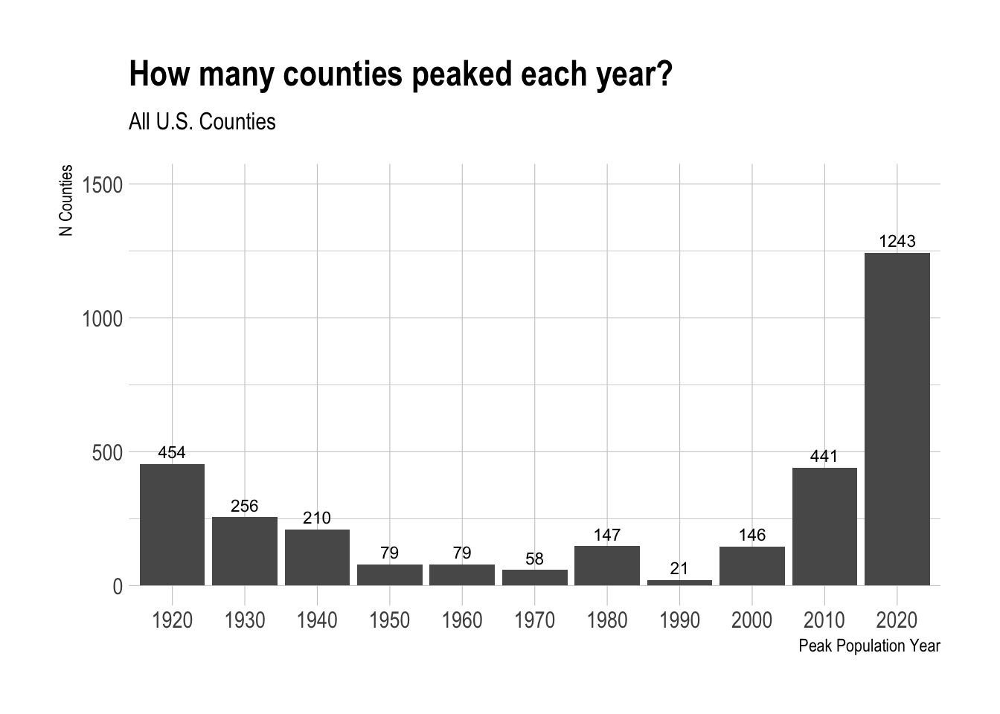
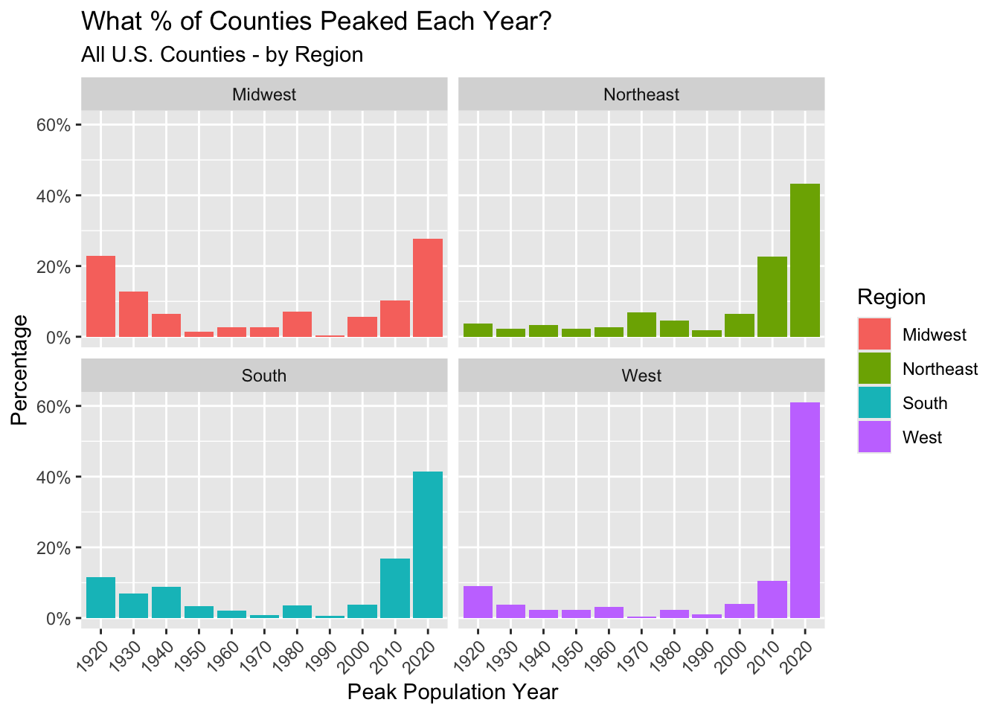
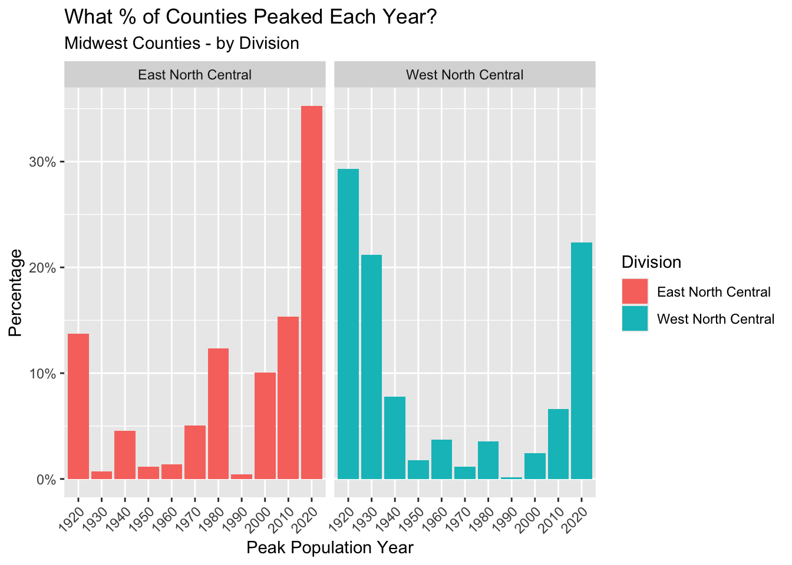
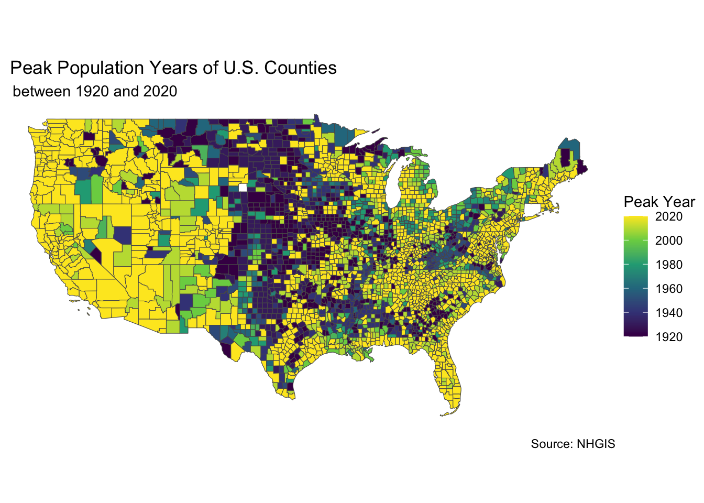

# load packages
library(tidyverse)
library(hrbrthemes)
library(mapview)
library(tigris)
library(sf)Introduction
This is an exploration of when population peaked in each county in the U.S. between 1920 and 2020.
Keep in mind that some county borders may have changed during this time period, so it’s possible that some change in population is due to border change rather than change in the number of people within the same boundaries.
1920 was selected as a start year for two reasons. First, this allows us to view population change over the last century. Second, Most significant county border changes had been completed by 1920.
For more about how borders have changed over time, check out the Atlas of County Historical Boundaries. Data was retrieved through the National Historical Geographic Information System.
The code beow details the steps to produce this fascinating map. Enjoy!

Import Data and View its Structure
# import data
county_pops_1900_2020 <- read_csv("Raw Data/county_pops_1900_2020.csv")
# view structure and check for NAs
summary(county_pops_1900_2020) GEOID cty pop_1900 pop_1910
Length:3134 Length:3134 Min. : 0 Min. : 0
Class :character Class :character 1st Qu.: 6321 1st Qu.: 9255
Mode :character Mode :character Median : 15083 Median : 16818
Mean : 24114 Mean : 29362
3rd Qu.: 24788 3rd Qu.: 27157
Max. :2050600 Max. :2762522
pop_1920 pop_1930 pop_1940 pop_1950
Min. : 0 Min. : 0 Min. : 0 Min. : 0
1st Qu.: 9830 1st Qu.: 9964 1st Qu.: 10279 1st Qu.: 9762
Median : 17376 Median : 17493 Median : 18467 Median : 18354
Mean : 33764 Mean : 39250 Mean : 42104 Mean : 48155
3rd Qu.: 28397 3rd Qu.: 30305 3rd Qu.: 32742 3rd Qu.: 35269
Max. :3053017 Max. :3982123 Max. :4063342 Max. :4508792
pop_1960 pop_1970 pop_1980 pop_1990
Min. : 0 Min. : 0 Min. : 0 Min. : 107
1st Qu.: 9212 1st Qu.: 9151 1st Qu.: 10357 1st Qu.: 10370
Median : 18118 Median : 18478 Median : 21617 Median : 22239
Mean : 57151 Mean : 64817 Mean : 72276 Mean : 79347
3rd Qu.: 39030 3rd Qu.: 42520 3rd Qu.: 50668 3rd Qu.: 54798
Max. :6038771 Max. :7032075 Max. :7477503 Max. :8863164
pop_2000 pop_2010 pop_2020
Min. : 67 Min. : 82 Min. : 64
1st Qu.: 11282 1st Qu.: 11180 1st Qu.: 10896
Median : 24705 Median : 25930 Median : 25781
Mean : 89787 Mean : 98489 Mean : 105821
3rd Qu.: 61949 3rd Qu.: 67020 3rd Qu.: 68100
Max. :9519338 Max. :9818605 Max. :10014009
NA's :3 Data Cleaning
There are 3,134 rows and all of the population columns are numeric. However, three nulls exist in the ‘pop_2020’ column; those should be investigated.
Check for duplicates
Luckily, there are no duplicate county GEOIDs, so no need for clean up there.
# check if there are any duplicate GEOIDs
any(duplicated(county_pops_1900_2020$GEOID))[1] FALSEDealing with Nulls
It looks like two Census Areas (county equivalents) in Alaska and one county in South Dakota have ‘NaN’ in the 2020 population column rather than values. These Alaska Census Areas were abolished between 2010 and 2020 and replaced with other areas, while Shannon County, SD was renamed as Oglala Lakota County.
They shouldn’t cause too much of a problem, since we are only seeking the maximum population year for each county, but important to keep in mind when viewing the results.
# show only rows with NAs in 'pop_2020' column
county_pops_1900_2020[is.na(county_pops_1900_2020$pop_2020), ]Split the ‘cty’ field into ‘county’ and ‘state’
This improves readability and allows for grouping by state and joining on Census region to the state later on
# split the 'cty' field
county_pops_1900_2020[c('county', 'state')] <- str_split_fixed(county_pops_1900_2020$cty, ',', 2)
# view results
county_pops_1900_2020 %>% select(GEOID, cty, county, state) %>% head()Remove 1900 and 1910 columns
Since we are only concerned with data from 1920 through 2020, these columns can be dropped
# select only needed columns
county_pops_1920_2020 <- county_pops_1900_2020 %>%
select (
-pop_1900,
-pop_1910
)Analysis
Now that the cleaning is out of the way, let’s find those max population years!
# Find max of each county by reshaping data
long_county_pops_1920_2020 <- county_pops_1920_2020 %>%
pivot_longer(
cols = !c(GEOID, cty, county, state),
names_to = "year",
values_to = "population"
)
# Make a dataframe of the max population years
max_population_years <- long_county_pops_1920_2020 %>%
group_by(cty) %>%
slice_max(population, n = 1, with_ties = FALSE) %>%
arrange(desc(population))
max_population_yearsGrouping by peak population year
It’s not surprising that 2020 is the most common peak population year: the U.S. population has (generally) steadily increased over the past 100 years and so you’d expect 2020 to be the most common peak year. What is surprising is that 1920 is the second most common peak year behind 2020 with 454 counties peaking that year. In fact, 1920, 1930, and 1940 were the 2nd, 4th, and 5th most common peak population year.
# Group by max population year and count
cty_by_max_yr <- max_population_years %>%
group_by(year) %>%
summarise(number_of_counties = n())
# replace "pop_" for cleaner formatting
cty_by_max_yr$year <- str_replace_all(cty_by_max_yr$year, "pop_", "")
# make a bar chart of the result
cty_by_max_yr %>%
ggplot(
aes(x = year, y = number_of_counties)
) +
geom_bar(stat = "identity") +
geom_text(aes(label = number_of_counties), hjust = 0.5, vjust = -0.5, color= "black", size = 3) +
labs(title = "How many counties peaked each year?",
subtitle = "All U.S. Counties",
y = "N Counties",
x = "Peak Population Year") +
scale_y_continuous(limits = c(0, 1500)) +
theme_ipsum()
Regional Variation
To untangle why this is occuring, it’s helpful to break the data down by region. Here, I join on Census region and division definitions.
# Import census regions and divisions sheet
census_regions <- read_csv("Raw Data/census_regions.csv")
# Trim whitespace from max_population_years to facilitate merging
max_population_years$state <- trimws(max_population_years$state)
# Join regions and divisions to max_population_years
max_population_years <- merge(x = max_population_years,
y = census_regions,
by.x = "state",
by.y = "State")There are significant differences between regions in the distribution of peak population years. The Midwest really stands out here. In the Midwest, 35% of counties had a peak population year in 1920 or 1930. That’s compared to 18% of Southern counties, 12% of Western counties, and just 5% of Northeastern counties.
The West also stands out, but for the opposite reason. Over 60% of counties in the West reached their peak population year in 2020. That’s compared to just 28% of Midwestern counties.
# Group by Region and max year
region_cty_by_max_yr <- max_population_years %>%
group_by(Region, year) %>%
summarise(number_of_counties = n())
# replace "pop_" for cleaner formatting
region_cty_by_max_yr$year <- str_replace_all(region_cty_by_max_yr$year, "pop_", "")
# Calculate percentage
region_cty_by_max_yr <- region_cty_by_max_yr %>%
group_by(Region) %>%
mutate(percentage = number_of_counties / sum(number_of_counties))
# Faceted bar chart by Region
region_cty_by_max_yr %>%
ggplot(
aes(x = year, y = percentage, fill = Region)
) +
geom_bar(stat = "identity") +
#geom_text(aes(label = number_of_counties), hjust = 0.5, vjust = -0.5, color= "black", size = 3) +
labs(title = "What % of Counties Peaked Each Year?",
subtitle = "All U.S. Counties - by Region",
y = "Percentage",
x = "Peak Population Year") +
scale_y_continuous(labels = scales::percent_format(accuracy = 1)) +
theme(axis.text.x = element_text(angle = 45, vjust = 1, hjust=1)) +
#theme_ipsum() +
facet_wrap(~ Region, nrow = 2)
There is also significant variation in peak population years within the Midwest itself. The Midwest region is broken down into the West North Central (Dakotas, Nebraska, Kansas, Minnesota, Iowa, Missouri) and East North Central (Wisconsin, Illinois, Michigan, Indiana, Ohio) divisions. Half of the counties in the West North Central division peaked in either 1920 or 1930.
Keep in mind that it’s possible some counties peaked before 1920, but our data frame is restricted to the last 100 years only.
# Group by Division (Midwest Only) and max year
mw_cty_by_max_yr <- max_population_years %>%
filter(Region == "Midwest") %>%
group_by(Division, year) %>%
summarise(number_of_counties = n())
# replace "pop_" for cleaner formatting
mw_cty_by_max_yr$year <- str_replace_all(mw_cty_by_max_yr$year, "pop_", "")
# Calculate percentage
mw_cty_by_max_yr <- mw_cty_by_max_yr %>%
group_by(Division) %>%
mutate(percentage = number_of_counties / sum(number_of_counties))
# Faceted bar chart by Region
mw_cty_by_max_yr %>%
ggplot(
aes(x = year, y = percentage, fill = Division)
) +
geom_bar(stat = "identity") +
#geom_text(aes(label = number_of_counties), hjust = 0.5, vjust = -0.5, color= "black", size = 3) +
labs(title = "What % of Counties Peaked Each Year?",
subtitle = "Midwest Counties - by Division",
y = "Percentage",
x = "Peak Population Year") +
scale_y_continuous(labels = scales::percent_format(accuracy = 1)) +
theme(axis.text.x = element_text(angle = 45, vjust = 1, hjust=1)) +
#theme_ipsum() +
facet_wrap(~ Division, nrow = 1)
Do any states stand out?
Although not a state, I did not know that Washington, D.C.’s population peaked in 1950. Beyond that, those “West North Central” Midwestern states have a comparatively high percentage of counties peaking in 1930 and 1920. In North Dakota, 43% of counties peaked in 1930.
# Group by state and max year
state_cty_by_max_yr <- max_population_years %>%
group_by(state, year) %>%
summarise(number_of_counties = n())
# replace "pop_" for cleaner formatting
state_cty_by_max_yr$year <- str_replace_all(state_cty_by_max_yr$year, "pop_", "")
# Calculate percentage
state_cty_by_max_yr <- state_cty_by_max_yr %>%
group_by(state) %>%
mutate(percentage = number_of_counties / sum(number_of_counties))
# Show states with high percent of counties peaking before 2020
state_cty_by_max_yr %>%
filter(
year != '2020'
) %>%
arrange(desc(percentage))Final County Map
Check out the map below. What interesting trends do you see?
# get county geographies
county_geo <- tigris::counties(cb = TRUE, resolution = '20m')# join county geographies to peak population year data
static_map_data <- merge(x = county_geo,
y = max_population_years,
by = "GEOID")
# remove Alaska/Hawaii for cleaner mapping
static_map_data <- static_map_data %>%
filter(!(state %in% c("Alaska", "Hawaii")))
# replace "pop_" in peak year column and change to numeric
static_map_data$year <- str_replace_all(static_map_data$year, "pop_", "")
static_map_data$year <- as.numeric(static_map_data$year)
# Make a map
ggplot(data = static_map_data, aes(fill = year)) +
geom_sf() +
labs(title = " Peak Population Years of U.S. Counties",
subtitle = " between 1920 and 2020",
caption = "Source: NHGIS",
fill = "Peak Year ") +
theme_void() +
scale_fill_continuous(type = "viridis",
breaks = c(1920, 1940, 1960, 1980, 2000, 2020))